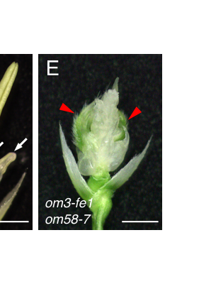

OsMADS3 (Q40704; gene MADS3/RAG; loci Os01g0201700 / LOC_Os01g10504) is the rice AGAMOUS ortholog - a C-class (AGAMOUS-lineage) MIKC-type MADS-box transcription factor. It is one of two duplicated rice AG-lineage C-class genes (with its paralog OsMADS58) that together control reproductive (inner-whorl) floral organ identity and floral meristem determinacy, the rice instantiation of the ABCDE / floral-quartet model of floral organ specification. Within the partitioned (subfunctionalized) duties of the two paralogs, OsMADS3 plays the more predominant role in repressing lodicule fate and in specifying stamen (whorl-3) identity, whereas OsMADS58 contributes more strongly to floral meristem determinacy and carpel morphogenesis. Genetically, loss of OsMADS3 (antisense lines and the T-DNA allele osmads3-3) causes almost all stamens to be homeotically transformed into lodicule-like organs and produces meristem-determinacy defects (increased carpel number, carpels-within-carpels); ectopic/overexpression of OsMADS3 conversely transforms lodicules into stamens. Mechanistically, OsMADS3 is a nuclear, sequence-specific DNA-binding transcription factor that acts through the MADS domain for DNA binding and the K-box for dimerization/higher-order MADS-complex (floral-quartet) assembly with SEP-like (E-class) partners. Beyond early organ identity, OsMADS3 has a later, stage-specific role in male reproductive development: it acts in late anther development by regulating reactive-oxygen-species (ROS) homeostasis, binding the MT-1-4b (metallothionein) promoter and inducing OsMT-I-4b to buffer ROS and promote tapetal programmed cell death. Unlike rice flowering-TIME regulators (e.g. GI, Hd3a), OsMADS3 is a genuine flower-development / floral-organ-identity gene; the SwissProt keyword-derived (SPKW, GO_REF:0000043) annotation to the generic "cell differentiation" (GO:0030154) therefore captured a real developmental role but at far too coarse a level, dropping the floral-organ-identity specificity that is the gene's actual function.
| GO Term | Evidence | Action | Reason |
|---|---|---|---|
|
GO:0006357
regulation of transcription by RNA polymerase II
|
IBA
GO_REF:0000033 |
ACCEPT |
Summary: IBA annotation propagated across the MADS-box / MEF2 transcription-factor phylogenetic group. OsMADS3 is a MIKC-type MADS-box transcription factor that regulates Pol II transcription of floral developmental target genes.
Reason: Core, correct function. OsMADS3 is the rice AGAMOUS ortholog, a sequence-specific DNA-binding transcription factor that controls floral organ identity by regulating downstream gene expression; it directly binds and induces the MT-1-4b promoter during late anther development, demonstrating transcriptional-regulatory activity. The IBA term is at an appropriate level of specificity for the conserved MADS-box TF function.
Supporting Evidence:
file:ORYSJ/MADS3/MADS3-deep-research-falcon.md
function as **DNA-binding dimers** and higher-order complexes that regulate developmental gene expression programs
PMID:16326928
regulating the organ identity of stamens and carpels, the repression of A-class genes, and floral meristem determinacy
|
|
GO:0000978
RNA polymerase II cis-regulatory region sequence-specific DNA binding
|
IBA
GO_REF:0000033 |
ACCEPT |
Summary: IBA annotation: OsMADS3 binds sequence-specific cis-regulatory DNA (CArG-box-type elements) via its MADS domain to regulate Pol II transcription of floral targets.
Reason: Correct core molecular function. As a MADS-box protein OsMADS3 contains the canonical MADS domain (residues 1-61) that mediates sequence-specific DNA binding; it binds the MT-1-4b promoter directly. The IBA term captures the sequence-specific cis-regulatory DNA-binding activity at the right level of specificity for a MIKC-type floral transcription factor.
Supporting Evidence:
file:ORYSJ/MADS3/MADS3-deep-research-falcon.md
function as **DNA-binding dimers** and higher-order complexes that regulate developmental gene expression programs
file:ORYSJ/MADS3/MADS3-deep-research-falcon.md
OsMADS3 is reported to **directly bind** the promoter of **MT-1–4b**
|
|
GO:0000977
RNA polymerase II transcription regulatory region sequence-specific DNA binding
|
IEA
GO_REF:0000002 |
ACCEPT |
Summary: IEA annotation from InterPro (IPR033896, MEF2-like N-terminal region). Captures the same sequence-specific Pol II regulatory-region DNA-binding activity as the IBA annotation to the sibling term GO:0000978, at a slightly broader level.
Reason: Consistent with the IBA annotation and with the documented MADS-domain DNA-binding activity of OsMADS3. The InterPro-derived term is correct; it overlaps the more precise cis-regulatory-region term (GO:0000978) but is not wrong. Duplicate / closely related sequence-specific DNA-binding terms with different evidence codes are acceptable.
Supporting Evidence:
file:ORYSJ/MADS3/MADS3-deep-research-falcon.md
function as **DNA-binding dimers** and higher-order complexes that regulate developmental gene expression programs
|
|
GO:0003677
DNA binding
|
IEA
GO_REF:0000002 |
ACCEPT |
Summary: IEA annotation from InterPro (MADS-box, IPR002100/IPR036879) for generic DNA binding. OsMADS3 binds DNA via its MADS domain.
Reason: Correct but generic. OsMADS3 is a DNA-binding MADS-box transcription factor; "DNA binding" is a true high-level parent of its sequence-specific cis-regulatory DNA binding (GO:0000978 / GO:0000977). It is uninformative compared with the specific sequence-specific terms but is not incorrect, so it can be accepted as supporting computational evidence.
Supporting Evidence:
file:ORYSJ/MADS3/MADS3-deep-research-falcon.md
function as **DNA-binding dimers** and higher-order complexes that regulate developmental gene expression programs
|
|
GO:0003700
DNA-binding transcription factor activity
|
IEA
GO_REF:0000002 |
ACCEPT |
Summary: IEA annotation from InterPro (TF_Kbox, IPR002487). OsMADS3 is a DNA-binding transcription factor - its core molecular function.
Reason: Core, correct molecular function. OsMADS3 is the rice AGAMOUS ortholog, a MIKC-type MADS-box transcription factor that binds DNA sequence-specifically and regulates transcription of floral developmental targets. The InterPro-derived TF-activity term is appropriate.
Supporting Evidence:
PMID:9869408
OsMADS3, is highly homologous to the members in the AGAMOUS (AG) family that is essential for the normal development of the internal
file:ORYSJ/MADS3/MADS3-deep-research-falcon.md
function as **DNA-binding dimers** and higher-order complexes that regulate developmental gene expression programs
|
|
GO:0005634
nucleus
|
IEA
GO_REF:0000120 |
ACCEPT |
Summary: IEA annotation for nuclear localization (UniProtKB-SubCell SL-0191; InterPro IPR002487). Consistent with OsMADS3's function as a nuclear transcription factor.
Reason: Correct cellular-component annotation. As a sequence-specific DNA-binding transcription factor, OsMADS3 acts in the nucleus; the UniProt entry assigns nuclear localization (by similarity), and the deep-research synthesis treats OsMADS3 as functioning in the nucleus. Direct fluorescent-tagging localization for OsMADS3 was not found in the accessible literature, but nuclear localization is well supported by its molecular function and family.
Supporting Evidence:
file:ORYSJ/MADS3/MADS3-deep-research-falcon.md
OsMADS3 function is inferred to occur **in the nucleus** where it binds target promoters (e.g., MT-1-4b)
|
|
GO:0006355
regulation of DNA-templated transcription
|
IEA
GO_REF:0000002 |
ACCEPT |
Summary: IEA annotation from InterPro (TF_Kbox, IPR002487) for generic regulation of DNA-templated transcription - a broad parent of the RNA-Pol-II-specific IBA term GO:0006357.
Reason: Correct but broad. OsMADS3 regulates transcription of its floral developmental targets (e.g. it binds and induces the MT-1-4b promoter). "Regulation of DNA-templated transcription" is a true high-level parent of the more specific "regulation of transcription by RNA polymerase II" (GO:0006357, IBA). It is not wrong and provides consistent computational support; the RNA-Pol-II-specific term is the more informative one.
Supporting Evidence:
file:ORYSJ/MADS3/MADS3-deep-research-falcon.md
function as **DNA-binding dimers** and higher-order complexes that regulate developmental gene expression programs
file:ORYSJ/MADS3/MADS3-deep-research-falcon.md
OsMADS3 is reported to **directly bind** the promoter of **MT-1–4b**
|
|
GO:0009791
post-embryonic development
|
IEA
GO_REF:0000117 |
MARK AS OVER ANNOTATED |
Summary: IEA annotation from an ARBA machine-learning model (ARBA00029007). A very broad developmental grouping term that does not capture OsMADS3's specific role in floral organ identity.
Reason: "Post-embryonic development" is an extremely generic, ML-derived process term that conveys almost no functional information. OsMADS3's actual developmental role is precisely defined: specification of stamen identity and floral organ identity, plus contribution to floral meristem determinacy. The specific floral terms (GO:0010097 specification of stamen identity, TAS; and GO:0048437 floral organ development, proposed below) fully capture the biology. The broad ARBA term is an over-annotation that adds nothing once the specific floral-development terms are present.
Supporting Evidence:
PMID:16326928
shows homeotic transformation of stamens into lodicules and ectopic development of lodicules in the second whorl
file:ORYSJ/MADS3/MADS3-deep-research-falcon.md
controlling reproductive organ identity and floral meristem determinacy
|
|
GO:0045944
positive regulation of transcription by RNA polymerase II
|
IEA
GO_REF:0000002 |
ACCEPT |
Summary: IEA annotation from InterPro (MEF2-like N-terminal region, IPR033896). OsMADS3 acts as a transcriptional activator (UniProt keyword "Activator"); it directly induces the MT-1-4b promoter during late anther development.
Reason: Supported. OsMADS3 is annotated by UniProt with the keyword "Activator", and the literature reports that it binds the MT-1-4b promoter and strongly induces OsMT-I-4b, a direct positive transcriptional-regulation activity. MADS-box C-class factors can both activate and repress targets, but a positive-regulation activity is genuinely documented, so the IEA term is acceptable.
Supporting Evidence:
file:ORYSJ/MADS3/MADS3-deep-research-falcon.md
OsMADS3 is reported to **directly bind** the promoter of **MT-1–4b** (a metallothionein gene implicated in ROS scavenging), linking OsMADS3 transcriptional control to **ROS homeostasis** during late anther development
|
|
GO:0046983
protein dimerization activity
|
IEA
GO_REF:0000002 |
ACCEPT |
Summary: IEA annotation from InterPro (MADS-box, IPR002100/IPR036879). MIKC-type MADS proteins dimerize (via the K-box) and assemble into higher-order floral-quartet complexes; OsMADS3 forms complexes with SEP-like (E-class) partners.
Reason: Correct. The K-box domain (residues 87-178) mediates dimerization and higher-order complex formation, the structural basis of the floral-quartet model. OsMADS3 is reported to form complexes with SEP-like proteins (OsMADS1, OsMADS5, OsMADS24/8, OsMADS34, OsMADS45/7), and the K-box splice variation is interpreted as affecting protein-protein interaction capacity. Protein dimerization activity is a genuine, family-conserved molecular function.
Supporting Evidence:
file:ORYSJ/MADS3/MADS3-deep-research-falcon.md
function as **DNA-binding dimers** and higher-order complexes that regulate developmental gene expression programs
file:ORYSJ/MADS3/MADS3-deep-research-falcon.md
OsMADS3 is described as acting via **protein complexes**, including interactions with **SEP-like MADS proteins**
|
|
GO:0048608
reproductive structure development
|
IEA
GO_REF:0000117 |
MODIFY |
Summary: IEA annotation from an ARBA machine-learning model (ARBA00028277). Correct in essence (OsMADS3 acts in reproductive/floral development) but a broad parent term that does not capture its specific floral-organ-identity role.
Reason: The essence is sound - OsMADS3 is a C-class floral homeotic gene that specifies reproductive (inner-whorl) organ identity - but "reproductive structure development" is a broad grouping term. The gene's documented role is more precisely the development and identity specification of floral organs (especially stamens). MODIFY to the more specific "floral organ development" (GO:0048437), which is accurate, non-obsolete, and complements the retained specific term GO:0010097 (specification of stamen identity).
Proposed replacements:
floral organ development
Supporting Evidence:
PMID:9869408
OsMADS3 belongs to the class C gene family of floral organ identity determination
file:ORYSJ/MADS3/MADS3-deep-research-falcon.md
controlling reproductive organ identity and floral meristem determinacy
|
|
GO:0010097
specification of stamen identity
|
TAS
PMID:19820190 MOSAIC FLORAL ORGANS1, an AGL6-like MADS box gene, regulates... |
ACCEPT |
Summary: TAS annotation (AgBase) to the specific process "specification of stamen identity". This is the core biological process of OsMADS3 - the rice AGAMOUS ortholog and the predominant C-class specifier of stamen (whorl-3) identity. (The cited reference, PMID:19820190, is the OsMADS6/MFO1 AGL6-like paper; it documents MADS-box control of floral organ identity but does not itself characterize OsMADS3, so the strongest gene-specific support comes from the OsMADS3 loss-of-function literature.)
Reason: This is the central, well-supported function of OsMADS3 and the most specific term in the annotation set. Loss-of-function evidence is decisive: antisense silencing and the T-DNA allele osmads3-3 cause almost all stamens to be homeotically transformed into lodicule-like organs, while overexpression transforms lodicules into stamens - the classic signature of a C-class stamen-identity specifier. OsMADS3 plays the more predominant role (vs its paralog OsMADS58) in repressing lodicule fate and specifying stamens. The term should be kept as a core function.
Supporting Evidence:
PMID:16326928
A knockout line of OSMADS3, in which the gene is disrupted by T-DNA insertion, shows homeotic transformation of stamens into lodicules
PMID:11828031
As a consequence of the ectopic expression of the OsMADS3, lodicules were homeotically transformed into stamens
PMID:9869408
the filaments of the transgenic plants were changed into thick and fleshy bodies, similar to lodicules
file:ORYSJ/MADS3/MADS3-deep-research-falcon.md
**Overexpression** of OsMADS3 can convert **lodicules to stamens**
|
|
GO:0030154
cell differentiation
|
IEA
GO_REF:0000043 |
MODIFY |
Summary: SPKW (GO_REF:0000043) annotation derived from the UniProt keyword "Differentiation"; snapshot-only, removed in the current GOA release. OsMADS3 genuinely acts in a developmental program, but "cell differentiation" is far too generic - it drops all of the floral-organ-identity specificity that is the gene's actual function.
Reason: Unlike rice flowering-TIME regulators (where a developmental keyword would be an over-annotation of a signalling protein), OsMADS3 IS a bona fide flower-development gene - the rice AGAMOUS ortholog and the predominant C-class specifier of stamen identity. So this is a MODIFY-to-specific case rather than a plain over-annotation: the keyword-derived "cell differentiation" (GO:0030154) is biologically in the right area but is so coarse that it conveys no information about WHAT differentiates. The precise, evidence-supported function is specification of floral-organ (stamen) identity: loss of OsMADS3 homeotically transforms stamens into lodicules and causes meristem-determinacy defects, while overexpression transforms lodicules into stamens. The annotation should therefore be retained but MODIFIED to the specific term "specification of stamen identity" (GO:0010097), which is already present in current GOA as a TAS annotation and captures the genuine biology that the retired generic keyword term only gestured at. (The broader "floral organ development", GO:0048437, and "floral meristem determinacy", GO:0010582, are also appropriate complementary terms; see core_functions and proposed_new_terms.) Net assessment: GOA's removal of the bare keyword term did not lose correct specific biology, because the specific stamen-identity term is independently annotated - but the generic keyword term itself was an over-coarse mapping that should be replaced rather than simply deleted.
Proposed replacements:
specification of stamen identity
Supporting Evidence:
PMID:16326928
A knockout line of OSMADS3, in which the gene is disrupted by T-DNA insertion, shows homeotic transformation of stamens into lodicules
PMID:11828031
As a consequence of the ectopic expression of the OsMADS3, lodicules were homeotically transformed into stamens
file:ORYSJ/MADS3/MADS3-deep-research-falcon.md
**Overexpression** of OsMADS3 can convert **lodicules to stamens**
|
Q: Does OsMADS3 bind a defined CArG-box motif in rice target promoters (e.g. MT-1-4b), and what is the genome-wide set of direct OsMADS3 targets in developing stamens versus late anthers?
Suggested experts: Hiroaki Hirano
Q: How is the division of labour between OsMADS3 and OsMADS58 encoded - is it differential expression timing, differential SEP-partner (floral-quartet) composition, or both - and does the Ser109 K-box splice isoform alter partner choice?
Suggested experts: Martin M. Kater
Experiment: Perform ChIP-seq / DAP-seq for OsMADS3 in developing florets and late anthers to define its direct genome-wide targets and its DNA-binding motif, and test direct binding to the MT-1-4b promoter.
Hypothesis: OsMADS3 binds CArG-box elements in the promoters of stamen-identity and ROS-homeostasis genes (including MT-1-4b), acting as the direct transcriptional driver of these programs.
Type: genome-wide TF binding (ChIP-seq/DAP-seq) plus targeted promoter assay
Experiment: Reconstitute candidate OsMADS3 floral-quartet complexes in vitro / in planta (with B-class OsMADS2/OsMADS4 and SEP-like OsMADS1/OsMADS7/OsMADS8) and test higher-order complex assembly and cooperative DNA binding for the S109 vs delta-S109 K-box isoforms.
Hypothesis: OsMADS3 specifies stamen identity as part of a higher-order MADS quartet with B-class and SEP-like partners, and the K-box Ser109 splice variant modulates partner-interaction capacity and thus target selectivity.
Type: protein-protein interaction / DNA-binding biochemistry
The research report should be a detailed narrative explaining the function, biological processes, and localization of the gene product. Citations should be given for all claims.
You should prioritize authoritative reviews and primary scientific literature when conducting research. You can supplement
this with annotations you find in gene/protein databases, but these can be outdated or inaccurate.
We are specifically interested in the primary function of the gene - for enzymes, what reaction is catalyzed, and what is the substrate specificity? For transporters, what is the substrate? For structural proteins or adapters, what is the broader structural role? For signaling molecules, what is the role in the pathway.
We are interested in where in or outside the cell the gene product carries out its function.
We are also interested in the signaling or biochemical pathways in which the gene functions. We are less interested in broad pleiotropic effects, except where these elucidate the precise role.
Include evidence where possible. We are interested in both experimental evidence as well as inference from structure, evolution, or bioinformatic analysis. Precise studies should be prioritized over high-throughput, where available.
The queried protein corresponds to OsMADS3, a rice (Oryza sativa subsp. japonica) AGAMOUS-lineage (class C) MIKC-type MADS-box transcription factor, also described as AGAMOUS-like and belonging to the rice AGAMOUS subfamily. This matches UniProt Q40704’s description and the literature’s usage of OsMADS3 as a rice class C floral homeotic gene controlling reproductive organ identity and floral meristem determinacy. Disambiguating identifiers used in the literature include the locus LOC_Os01g10504 and its close paralog OsMADS58 (ravasio2017newinsightson pages 42-46, dreni2013theinsand pages 4-6, dreni2013theinsand pages 1-2).
Plant type II MADS-box transcription factors are typically MIKC-type proteins with modular architecture and function as DNA-binding dimers and higher-order complexes that regulate developmental gene expression programs (dreni2013theinsand pages 1-2, dreni2013theinsand pages 2-4). For AGAMOUS-lineage factors (C/D-class group), SEPALLATA (E-class) proteins act as molecular bridges enabling formation of higher-order complexes (often described as “floral quartets”), a key mechanistic concept used to explain how organ identity is specified by combinatorial transcription factor assemblies (dreni2013theinsand pages 1-2).
In the ABC model and its extensions, C-function is classically associated with specification of stamens and carpels and with floral meristem determinacy (FMD). In rice, the AGAMOUS subfamily includes multiple members; OsMADS3 and OsMADS58 are the two principal AG (class C) lineage genes and are frequently described as rice orthologs of Arabidopsis AGAMOUS (dreni2013theinsand pages 2-4, ravasio2017newinsightson pages 36-38, dreni2013theinsand pages 1-2).
Genetic and transgenic evidence supports OsMADS3 as a major determinant of stamen identity in rice, with partial redundancy with OsMADS58:
- Overexpression of OsMADS3 can convert lodicules to stamens, demonstrating its capacity to impose stamen identity (dreni2013theinsand pages 4-6, sugiyama2019riceflowerdevelopment pages 28-29).
- Loss-of-function or knockdown causes homeotic transformations (stamen → lodicule-like organs) and can result in male sterility with defective stamen/anther development (dreni2013theinsand pages 4-6).
In current synthesis, OsMADS3 is often described as contributing more strongly to stamen development, while OsMADS58 has a comparatively stronger role in aspects of pistil/carpel development and determinacy; however, the two show important redundancy in reproductive organ regulation (ravasio2017newinsightson pages 36-38, dreni2020functionallydivergentsplicing pages 1-2).
A key class C outcome is termination of the floral meristem after organ primordia are produced. Multiple sources describe that combined disruption of OsMADS3 and OsMADS58 causes loss of FMD, leading to continued organ production from the flower center (dreni2013theinsand pages 1-2, ravasio2017newinsightson pages 36-38, dreni2020functionallydivergentsplicing pages 1-2). Visual evidence from mutant phenotypes and meristem-marker expression (e.g., persistent OSH1 expression) supports this role (sugiyama2019riceflowerdevelopment media 1a57332d).
Unlike Arabidopsis, the identity of the primary carpel-specification regulator in rice is debated. Sugiyama et al. (2019) report that carpel-like organs expressing DL can still form in an osmads3 osmads58 complete loss-of-function background, supporting the interpretation that rice class C genes are not the primary carpel specification factors, but rather contribute to elaboration of carpel morphology and/or other reproductive organ programs (sugiyama2019riceflowerdevelopment pages 2-3, sugiyama2019riceflowerdevelopment pages 6-7). Consistent mutant phenotypes and a summary model are shown in the retrieved figures (sugiyama2019riceflowerdevelopment media 1a57332d).
Beyond early organ identity, OsMADS3 is implicated in late anther development, particularly in tapetum and microspore stages. OsMADS3 expression is reported as strong in tapetum and microspores at stages 9–12 (rice anther staging), and osmads3 mutants show tapetum and microspore defects during these stages leading to male sterility (dreni2013theinsand pages 4-6).
Mechanistically, OsMADS3 is reported to directly bind the promoter of MT-1–4b (a metallothionein gene implicated in ROS scavenging), linking OsMADS3 transcriptional control to ROS homeostasis during late anther development (dreni2013theinsand pages 4-6, pilatone2014molecularcontrolof pages 35-39). Multiple later sources (reviews and newer work focused on other genes) continue to cite this OsMADS3→MT-1-4b→ROS module as part of current tapetal degeneration/PCD and pollen development frameworks (li2024riceosplatz3controls pages 1-5).
OsMADS3 is described as acting via protein complexes, including interactions with SEP-like MADS proteins (rice SEP orthologs), consistent with conserved MADS-complex mechanisms for organ identity specification (ravasio2017newinsightson pages 36-38, dreni2020functionallydivergentsplicing pages 1-2). This aligns with the general principle that SEP proteins bridge and stabilize multi-protein assemblies needed for transcriptional regulation by MADS factors (dreni2013theinsand pages 1-2).
As a MADS-box transcription factor governing transcription, OsMADS3 function is inferred to occur in the nucleus where it binds target promoters (e.g., MT-1-4b) and participates in transcriptional complexes (dreni2013theinsand pages 4-6, pilatone2014molecularcontrolof pages 35-39). Tissue/cell-type context in which OsMADS3 acts includes:
- Floral meristem shortly before organ differentiation, with stronger localization in cells fated to form stamen primordia (dreni2013theinsand pages 4-6).
- Tapetum and microspores during late anther development (stages 9–12) (dreni2013theinsand pages 4-6).
A 2024 review on floral organ development reiterates that rice contains class C genes OsMADS3 and OsMADS58 with conserved AG-like functions in reproductive organ regulation, reflecting continued consensus positioning of OsMADS3 in organ identity frameworks (ravasio2017newinsightson pages 36-38).
A 2024 bioRxiv preprint on tapetal ROS regulation (focused on OsPLATZ3) cites the established role of OsMADS3 in inducing MT-1-4b to maintain ROS homeostasis in late anther development, indicating that OsMADS3 remains a foundational node in up-to-date mechanistic narratives of rice anther development (li2024riceosplatz3controls pages 1-5).
Within this tool run, few 2023–2024 primary studies directly centered on OsMADS3 were accessible in full text. The most substantively quantitative mechanistic update retrieved remains the 2020 alternative-splicing work (below). Accordingly, the “latest research” section is necessarily weighted toward 2024 reviews/preprints referencing OsMADS3 rather than new OsMADS3-centered experiments.
A key mechanistic development is that OsMADS3 undergoes alternative splicing yielding two isoforms that differ by a single serine residue (S109) in the K-domain:
- Two isoforms are described as OsMADS3+S109 and OsMADS3 (ΔS109) (dreni2020functionallydivergentsplicing pages 7-9).
- RNA-seq analysis found that ~39% of OsMADS3 transcripts carry the 3-nt deletion removing S109 (range ~29–47% across datasets/tissues) and that both isoforms are present across reproductive tissues (young/mature panicles, stamens, ovaries, stigmas) (dreni2020functionallydivergentsplicing pages 7-9).
- Functional tests in Arabidopsis ag mutant complementation indicated only the eudicot-like isoform lacking S109 could specify stamens and carpels in that heterologous system, suggesting this single-residue difference materially affects AG-like function (dreni2020functionallydivergentsplicing pages 1-2).
These results provide one of the clearest quantitative/statistical data points available here for OsMADS3 biology (isoform proportion across tissues) and illustrate how protein interaction surfaces in the K-domain can modulate complex formation and biological output (dreni2020functionallydivergentsplicing pages 7-9).
Practical implementations in the literature retrieved here are mostly at the research/biotechnology proof-of-concept stage:
- Transgenic manipulation of floral organs: ectopic OsMADS3 expression can convert lodicules to stamens, demonstrating direct engineering of floral organ identity (dreni2013theinsand pages 4-6, sugiyama2019riceflowerdevelopment pages 28-29).
- Genome editing as an enabling technology: sources discussing rice floral genetics highlight CRISPR/Cas approaches and mutant resources used to dissect these pathways (sugiyama2019riceflowerdevelopment pages 28-29). The OsMADS3 isoform finding motivates isoform-specific genome editing strategies (e.g., forcing ΔS109-only expression) as an experimental and potentially trait-engineering route (ravasio2017newinsightson pages 84-88).
Because OsMADS3 affects male fertility (via anther development and ROS homeostasis) and floral organ identity, it is conceptually relevant to strategies for male sterility systems and hybrid seed production. However, this run did not retrieve authoritative 2023–2024 primary evidence of deployed field-scale implementations specifically using OsMADS3, so claims about real-world adoption should be treated as prospective rather than documented in the current evidence base (dreni2013theinsand pages 4-6, ravasio2017newinsightson pages 84-88).
Two authoritative peer-reviewed sources frame OsMADS3’s role with high confidence:
- Dreni et al. 2013 (Molecular Plant) synthesize genetic and molecular evidence placing OsMADS3 as a master regulator of reproductive organ development, with strong emphasis on stamen identity and late anther ROS regulation via MT-1-4b (dreni2013theinsand pages 4-6).
- Sugiyama et al. 2019 (Plant & Cell Physiology) provide an explicit expert re-evaluation of rice carpel specification, arguing that class C genes (OsMADS3/OsMADS58) are not primary carpel determinants in rice and highlighting DL as a central carpel regulator; they also reinforce OsMADS3/58 roles in stamen identity and meristem determinacy (sugiyama2019riceflowerdevelopment pages 2-3, sugiyama2019riceflowerdevelopment pages 6-7).
Quantitative measurements of ROS levels, MT-1-4b fold-changes, or penetrance percentages for specific osmads3 alleles are not present in the accessible excerpts in this run; those values are likely in the primary Plant Cell study (Hu et al., 2011) that multiple sources cite but which was unobtainable here (dreni2013theinsand pages 4-6, li2024riceosplatz3controls pages 1-5).
Retrieved figures from Sugiyama et al. (2019) illustrate osmads3 osmads58 double mutant floral phenotypes, DL expression in carpel-like organs, and persistent OSH1 expression consistent with loss of meristem determinacy, as well as a summary regulatory model placing OsMADS3/58 and DL in rice floral development (sugiyama2019riceflowerdevelopment media 1a57332d).
| Year | Citation (first author, journal) | URL | Evidence type | Key findings about OsMADS3 | Quantitative/statistical data (if any) | Notes/limitations |
|---|---|---|---|---|---|---|
| 2013 | Dreni, Molecular Plant | https://doi.org/10.1093/mp/sst019 | Review | Places OsMADS3 in the rice AGAMOUS/class C MADS-box lineage; summarizes that OsMADS3 is preferentially involved in stamen identity, acts redundantly with OsMADS58 in reproductive organ identity and floral meristem determinacy, is expressed in floral meristem cells fated for stamens, and later in tapetum/microspores; reports direct regulation of MT-1-4b linked to ROS homeostasis in late anther development (dreni2013theinsand pages 4-6) | Anther-stage expression summarized for stages 9–12 in tapetum/microspores; no p-values or fold-changes in accessible excerpt (dreni2013theinsand pages 4-6) | Secondary synthesis rather than the original experimental report for MT-1-4b/ROS; useful high-authority overview but limited raw statistics in excerpt (dreni2013theinsand pages 4-6) |
| 2019 | Sugiyama, Plant & Cell Physiology | https://doi.org/10.1093/pcp/pcz020 | Review with primary mutant analysis | Reassesses rice carpel specification; concludes OsMADS3/OsMADS58 are important for stamen specification and floral meristem determinacy, but not the primary determinants of carpel specification in rice because carpel-like organs still form in the double mutant and express DL; supports a model where class C genes elaborate carpel morphology rather than specify carpels (sugiyama2019riceflowerdevelopment pages 2-3, sugiyama2019riceflowerdevelopment pages 6-7, sugiyama2019riceflowerdevelopment media 1a57332d) | No explicit numeric penetrance in accessible excerpt; visual evidence includes double-mutant flowers with persistent meristem and carpel-like organs (sugiyama2019riceflowerdevelopment media 1a57332d) | Important because it challenges earlier stronger class-C-centric carpel models; quantitative details are sparse in retrieved text (sugiyama2019riceflowerdevelopment pages 2-3, sugiyama2019riceflowerdevelopment pages 6-7) |
| 2020 | Dreni, Frontiers in Plant Science | https://doi.org/10.3389/fpls.2020.00637 | Primary | Demonstrates that OsMADS3 undergoes alternative splicing to generate two isoforms differing by a single S109 residue in the K domain; only the isoform lacking S109 showed stronger AG-like activity in Arabidopsis ag complementation; supports isoform-dependent functional divergence and altered SEP interactions (dreni2020functionallydivergentsplicing pages 1-2, dreni2020functionallydivergentsplicing pages 7-9) | RNA-seq survey found about 39% of OsMADS3 transcripts carry the 3-nt deletion, with tissue range about 29–47%; both isoforms present in young/mature panicles, stamens, ovaries, and stigmas (dreni2020functionallydivergentsplicing pages 7-9) | Strongest quantitative source retrieved for OsMADS3; functional assay was partly heterologous (Arabidopsis), so direct in-rice isoform effects remain to be fully resolved (dreni2020functionallydivergentsplicing pages 1-2, dreni2020functionallydivergentsplicing pages 7-9) |
| 2017 | Ravasio, doctoral thesis | https://doi.org/10.13130/ravasio-andrea_phd2017-11-06 | Thesis | Identifies OsMADS3 as the rice AG ortholog/class C gene; reports two isoforms (OsMADS3S109 and OsMADS3ΔS109) differing by one serine in the K-box; summarizes that OsMADS3 is especially important for stamen development, while OsMADS3 and OsMADS58 together control reproductive organ identity and floral meristem determinacy; notes complex formation with SEP proteins and severe seed/fertility defects in higher-order AG-subfamily mutants (ravasio2017newinsightson pages 36-38, ravasio2017newinsightson pages 1-4, ravasio2017newinsightson pages 42-46, ravasio2017newinsightson pages 84-88) | Public RNA-seq summary indicates about 39% deletion-containing transcripts; no formal statistical tests visible in excerpt (ravasio2017newinsightson pages 42-46) | Valuable for mechanistic detail and synthesis, but not a peer-reviewed primary journal article; some findings later published in 2020 (ravasio2017newinsightson pages 1-4, ravasio2017newinsightson pages 42-46) |
| 2014 | Pilatone, doctoral thesis | https://doi.org/10.13130/pilatone-alessandro_phd2014-01-24 | Thesis | Summarizes genetic evidence that OsMADS3 is a rice class C gene involved in stamen identity, carpel identity/reproductive organ specification together with OsMADS58, and floral meristem determinacy; also states that OsMADS3 directly binds the MT-1-4b promoter and regulates ROS homeostasis during late anther development (pilatone2014molecularcontrolof pages 35-39) | No explicit fold-change or ROS values in accessible excerpt (pilatone2014molecularcontrolof pages 35-39) | Useful bridge to otherwise inaccessible primary papers, but not itself the original source for the ROS-binding experiments (pilatone2014molecularcontrolof pages 35-39) |
| 2016 | Xie, Scientific Reports | https://doi.org/10.1038/srep21030 | Primary methods paper | Uses MADS3 as a demonstration case for a CAPS-based protein–DNA binding assay, validating binding to a CArG-box-containing MT-1-4b promoter fragment; supports direct DNA-binding capability relevant to the OsMADS3→MT-1-4b regulatory model (pilatone2014molecularcontrolof pages 35-39) | Semi-quantitative assay framework described, but no OsMADS3 biological phenotype statistics extracted here (pilatone2014molecularcontrolof pages 35-39) | Primarily a methods paper; supports promoter-binding evidence rather than whole-plant function by itself (pilatone2014molecularcontrolof pages 35-39) |
| 2016 | Yi, Plant Physiology | https://doi.org/10.1104/pp.15.01561 | Primary | Not an OsMADS3 paper, but independently cites the established model that mutations in OsMADS3 reduce MT-1-4b expression and cause elevated ROS in anthers, embedding OsMADS3 within broader tapetal ROS-regulatory networks (li2024riceosplatz3controls pages 1-5) | No OsMADS3-specific numeric values in accessible excerpt (li2024riceosplatz3controls pages 1-5) | Indirect support only; relies on prior OsMADS3 literature for the core claim (li2024riceosplatz3controls pages 1-5) |
| 2022 | Xie, Antioxidants | https://doi.org/10.3390/antiox11020287 | Review | Reviews redox control of pollen development and states that OsMADS3 directly up-regulates MT-1-4b to modulate ROS levels during rice anther development, reinforcing OsMADS3 as a transcriptional link between floral identity genes and redox homeostasis (pilatone2014molecularcontrolof pages 35-39) | No new OsMADS3-specific numbers in excerpt (pilatone2014molecularcontrolof pages 35-39) | Useful recent synthesis, but mainly reiterates Hu et al. 2011-type findings rather than providing new experiments (pilatone2014molecularcontrolof pages 35-39) |
| 2024 | Li, bioRxiv | https://doi.org/10.1101/2024.03.04.583394 | Preprint | Discusses tapetal ROS regulation and cites OsMADS3–MT-1-4b as an established regulatory module during late anther development, showing that OsMADS3 remains part of current mechanistic models of rice pollen/tapetum biology (li2024riceosplatz3controls pages 1-5) | No explicit OsMADS3-specific quantitative data in excerpt (li2024riceosplatz3controls pages 1-5) | Preprint and not focused on OsMADS3 directly; useful only as recent contextual confirmation (li2024riceosplatz3controls pages 1-5) |
| 2024 | Maio, Plants | https://doi.org/10.3390/plants13111595 | Review | Recent review of floral organ development that notes rice class C genes OsMADS3 and OsMADS58 retain conserved AG-like functions, supporting continued consensus that OsMADS3 is central to reproductive organ development in cereals (ravasio2017newinsightson pages 36-38) | No quantitative OsMADS3-specific data in accessible snippet (ravasio2017newinsightson pages 36-38) | Broad review, not OsMADS3-focused; useful for up-to-date consensus framing rather than mechanistic depth (ravasio2017newinsightson pages 36-38) |
Table: This table compiles the main accessible sources supporting functional annotation of rice OsMADS3 (UniProt Q40704), highlighting its roles in stamen identity, floral meristem determinacy, ROS regulation through MT-1-4b, and conserved S109 alternative splicing. It also flags where evidence is primary versus review-level and where quantitative detail is limited.
OsMADS3 (UniProt Q40704) encodes a MIKC-type MADS-box transcription factor of the AGAMOUS/class C lineage that functions primarily in stamen identity specification, contributes (with OsMADS58) to reproductive organ identity and floral meristem determinacy, and has a second functional module in late anther development by directly regulating MT-1-4b to modulate ROS homeostasis in tapetum/microspores (dreni2013theinsand pages 4-6, dreni2020functionallydivergentsplicing pages 1-2). Rice carpel specification appears to rely strongly on DROOPING LEAF (DL), with OsMADS3/58 contributing more to carpel morphology/determinacy than primary carpel specification (sugiyama2019riceflowerdevelopment pages 2-3, sugiyama2019riceflowerdevelopment pages 6-7).
References
(ravasio2017newinsightson pages 42-46): ANDREA RAVASIO. New insights on the agamous subfamily genes in oryza sativa. Text, Nov 2017. URL: https://doi.org/10.13130/ravasio-andrea_phd2017-11-06, doi:10.13130/ravasio-andrea_phd2017-11-06. This article has 0 citations and is from a peer-reviewed journal.
(dreni2013theinsand pages 4-6): Ludovico Dreni, Michela Osnato, and Martin M. Kater. The ins and outs of the rice agamous subfamily. Molecular plant, 6 3:650-64, May 2013. URL: https://doi.org/10.1093/mp/sst019, doi:10.1093/mp/sst019. This article has 41 citations and is from a highest quality peer-reviewed journal.
(dreni2013theinsand pages 1-2): Ludovico Dreni, Michela Osnato, and Martin M. Kater. The ins and outs of the rice agamous subfamily. Molecular plant, 6 3:650-64, May 2013. URL: https://doi.org/10.1093/mp/sst019, doi:10.1093/mp/sst019. This article has 41 citations and is from a highest quality peer-reviewed journal.
(dreni2013theinsand pages 2-4): Ludovico Dreni, Michela Osnato, and Martin M. Kater. The ins and outs of the rice agamous subfamily. Molecular plant, 6 3:650-64, May 2013. URL: https://doi.org/10.1093/mp/sst019, doi:10.1093/mp/sst019. This article has 41 citations and is from a highest quality peer-reviewed journal.
(ravasio2017newinsightson pages 36-38): ANDREA RAVASIO. New insights on the agamous subfamily genes in oryza sativa. Text, Nov 2017. URL: https://doi.org/10.13130/ravasio-andrea_phd2017-11-06, doi:10.13130/ravasio-andrea_phd2017-11-06. This article has 0 citations and is from a peer-reviewed journal.
(sugiyama2019riceflowerdevelopment pages 28-29): Shige-Hiro Sugiyama, Yukiko Yasui, Suzuha Ohmori, Wakana Tanaka, and Hiro-Yuki Hirano. Rice flower development revisited: regulation of carpel specification and flower meristem determinacy. Plant & cell physiology, 60 6:1284-1295, Jun 2019. URL: https://doi.org/10.1093/pcp/pcz020, doi:10.1093/pcp/pcz020. This article has 39 citations and is from a domain leading peer-reviewed journal.
(dreni2020functionallydivergentsplicing pages 1-2): Ludovico Dreni, Andrea Ravasio, Nahuel Gonzalez-Schain, Sara Jacchia, Glacy Jaqueline da Silva, Stefano Ricagno, Rosaria Russo, Francesca Caselli, Veronica Gregis, and Martin M. Kater. Functionally divergent splicing variants of the rice agamous ortholog osmads3 are evolutionary conserved in grasses. Frontiers in Plant Science, May 2020. URL: https://doi.org/10.3389/fpls.2020.00637, doi:10.3389/fpls.2020.00637. This article has 7 citations.
(sugiyama2019riceflowerdevelopment media 1a57332d): Shige-Hiro Sugiyama, Yukiko Yasui, Suzuha Ohmori, Wakana Tanaka, and Hiro-Yuki Hirano. Rice flower development revisited: regulation of carpel specification and flower meristem determinacy. Plant & cell physiology, 60 6:1284-1295, Jun 2019. URL: https://doi.org/10.1093/pcp/pcz020, doi:10.1093/pcp/pcz020. This article has 39 citations and is from a domain leading peer-reviewed journal.
(sugiyama2019riceflowerdevelopment pages 2-3): Shige-Hiro Sugiyama, Yukiko Yasui, Suzuha Ohmori, Wakana Tanaka, and Hiro-Yuki Hirano. Rice flower development revisited: regulation of carpel specification and flower meristem determinacy. Plant & cell physiology, 60 6:1284-1295, Jun 2019. URL: https://doi.org/10.1093/pcp/pcz020, doi:10.1093/pcp/pcz020. This article has 39 citations and is from a domain leading peer-reviewed journal.
(sugiyama2019riceflowerdevelopment pages 6-7): Shige-Hiro Sugiyama, Yukiko Yasui, Suzuha Ohmori, Wakana Tanaka, and Hiro-Yuki Hirano. Rice flower development revisited: regulation of carpel specification and flower meristem determinacy. Plant & cell physiology, 60 6:1284-1295, Jun 2019. URL: https://doi.org/10.1093/pcp/pcz020, doi:10.1093/pcp/pcz020. This article has 39 citations and is from a domain leading peer-reviewed journal.
(pilatone2014molecularcontrolof pages 35-39): ALESSANDRO PILATONE. Molecular control of reproductive organ development in rice (oryza sativa l.). ArXiv, Jan 2014. URL: https://doi.org/10.13130/pilatone-alessandro_phd2014-01-24, doi:10.13130/pilatone-alessandro_phd2014-01-24. This article has 0 citations.
(li2024riceosplatz3controls pages 1-5): Yuanya Li, Jing Wang, Fengxian Tang, Lin Li, Xingyu Cheng, Xialing Sun, Shuangshuang Yu, Pan Xia, Yuxiang Wang, Mingyang Tong, and Lizhong Cheng. Rice osplatz3 controls ros homeostasis by inhibiting ros-scavenging activity during tapetum degeneration. bioRxiv, Mar 2024. URL: https://doi.org/10.1101/2024.03.04.583394, doi:10.1101/2024.03.04.583394. This article has 1 citations.
(dreni2020functionallydivergentsplicing pages 7-9): Ludovico Dreni, Andrea Ravasio, Nahuel Gonzalez-Schain, Sara Jacchia, Glacy Jaqueline da Silva, Stefano Ricagno, Rosaria Russo, Francesca Caselli, Veronica Gregis, and Martin M. Kater. Functionally divergent splicing variants of the rice agamous ortholog osmads3 are evolutionary conserved in grasses. Frontiers in Plant Science, May 2020. URL: https://doi.org/10.3389/fpls.2020.00637, doi:10.3389/fpls.2020.00637. This article has 7 citations.
(ravasio2017newinsightson pages 84-88): ANDREA RAVASIO. New insights on the agamous subfamily genes in oryza sativa. Text, Nov 2017. URL: https://doi.org/10.13130/ravasio-andrea_phd2017-11-06, doi:10.13130/ravasio-andrea_phd2017-11-06. This article has 0 citations and is from a peer-reviewed journal.
(ravasio2017newinsightson pages 1-4): ANDREA RAVASIO. New insights on the agamous subfamily genes in oryza sativa. Text, Nov 2017. URL: https://doi.org/10.13130/ravasio-andrea_phd2017-11-06, doi:10.13130/ravasio-andrea_phd2017-11-06. This article has 0 citations and is from a peer-reviewed journal.

id: Q40704
gene_symbol: MADS3
product_type: PROTEIN
status: COMPLETE
taxon:
id: NCBITaxon:39947
label: Oryza sativa subsp. japonica
description: >
OsMADS3 (Q40704; gene MADS3/RAG; loci Os01g0201700 / LOC_Os01g10504) is the rice
AGAMOUS ortholog - a C-class (AGAMOUS-lineage) MIKC-type MADS-box transcription
factor. It is one of two duplicated rice AG-lineage C-class genes (with its paralog
OsMADS58) that together control reproductive (inner-whorl) floral organ identity and
floral meristem determinacy, the rice instantiation of the ABCDE / floral-quartet model
of floral organ specification. Within the partitioned (subfunctionalized) duties of the
two paralogs, OsMADS3 plays the more predominant role in repressing lodicule fate and in
specifying stamen (whorl-3) identity, whereas OsMADS58 contributes more strongly to
floral meristem determinacy and carpel morphogenesis. Genetically, loss of OsMADS3
(antisense lines and the T-DNA allele osmads3-3) causes almost all stamens to be
homeotically transformed into lodicule-like organs and produces meristem-determinacy
defects (increased carpel number, carpels-within-carpels); ectopic/overexpression of
OsMADS3 conversely transforms lodicules into stamens. Mechanistically, OsMADS3 is a
nuclear, sequence-specific DNA-binding transcription factor that acts through the MADS
domain for DNA binding and the K-box for dimerization/higher-order MADS-complex
(floral-quartet) assembly with SEP-like (E-class) partners. Beyond early organ identity,
OsMADS3 has a later, stage-specific role in male reproductive development: it acts in
late anther development by regulating reactive-oxygen-species (ROS) homeostasis, binding
the MT-1-4b (metallothionein) promoter and inducing OsMT-I-4b to buffer ROS and promote
tapetal programmed cell death. Unlike rice flowering-TIME regulators (e.g. GI, Hd3a),
OsMADS3 is a genuine flower-development / floral-organ-identity gene; the SwissProt
keyword-derived (SPKW, GO_REF:0000043) annotation to the generic "cell differentiation"
(GO:0030154) therefore captured a real developmental role but at far too coarse a level,
dropping the floral-organ-identity specificity that is the gene's actual function.
alternative_products:
- name: '1'
id: Q40704-1
- name: '2'
id: Q40704-2
sequence_note: VSP_017779
- name: '3'
id: Q40704-3
sequence_note: VSP_017777, VSP_017778
existing_annotations:
- term:
id: GO:0006357
label: regulation of transcription by RNA polymerase II
evidence_type: IBA
original_reference_id: GO_REF:0000033
qualifier: involved_in
review:
summary: >
IBA annotation propagated across the MADS-box / MEF2 transcription-factor
phylogenetic group. OsMADS3 is a MIKC-type MADS-box transcription factor that
regulates Pol II transcription of floral developmental target genes.
action: ACCEPT
reason: >
Core, correct function. OsMADS3 is the rice AGAMOUS ortholog, a sequence-specific
DNA-binding transcription factor that controls floral organ identity by regulating
downstream gene expression; it directly binds and induces the MT-1-4b promoter during
late anther development, demonstrating transcriptional-regulatory activity. The IBA
term is at an appropriate level of specificity for the conserved MADS-box TF function.
supported_by:
- reference_id: file:ORYSJ/MADS3/MADS3-deep-research-falcon.md
supporting_text: "function as **DNA-binding dimers** and higher-order complexes
that regulate developmental gene expression programs"
- reference_id: PMID:16326928
supporting_text: "regulating the organ identity of stamens and carpels, the
repression of A-class genes, and floral meristem determinacy"
- term:
id: GO:0000978
label: RNA polymerase II cis-regulatory region sequence-specific DNA binding
evidence_type: IBA
original_reference_id: GO_REF:0000033
qualifier: enables
review:
summary: >
IBA annotation: OsMADS3 binds sequence-specific cis-regulatory DNA (CArG-box-type
elements) via its MADS domain to regulate Pol II transcription of floral targets.
action: ACCEPT
reason: >
Correct core molecular function. As a MADS-box protein OsMADS3 contains the canonical
MADS domain (residues 1-61) that mediates sequence-specific DNA binding; it binds the
MT-1-4b promoter directly. The IBA term captures the sequence-specific cis-regulatory
DNA-binding activity at the right level of specificity for a MIKC-type floral
transcription factor.
supported_by:
- reference_id: file:ORYSJ/MADS3/MADS3-deep-research-falcon.md
supporting_text: "function as **DNA-binding dimers** and higher-order complexes
that regulate developmental gene expression programs"
- reference_id: file:ORYSJ/MADS3/MADS3-deep-research-falcon.md
supporting_text: "OsMADS3 is reported to **directly bind** the promoter of **MT-1–4b**"
- term:
id: GO:0000977
label: RNA polymerase II transcription regulatory region sequence-specific DNA
binding
evidence_type: IEA
original_reference_id: GO_REF:0000002
qualifier: enables
review:
summary: >
IEA annotation from InterPro (IPR033896, MEF2-like N-terminal region). Captures the
same sequence-specific Pol II regulatory-region DNA-binding activity as the IBA
annotation to the sibling term GO:0000978, at a slightly broader level.
action: ACCEPT
reason: >
Consistent with the IBA annotation and with the documented MADS-domain DNA-binding
activity of OsMADS3. The InterPro-derived term is correct; it overlaps the more
precise cis-regulatory-region term (GO:0000978) but is not wrong. Duplicate / closely
related sequence-specific DNA-binding terms with different evidence codes are
acceptable.
supported_by:
- reference_id: file:ORYSJ/MADS3/MADS3-deep-research-falcon.md
supporting_text: "function as **DNA-binding dimers** and higher-order complexes
that regulate developmental gene expression programs"
- term:
id: GO:0003677
label: DNA binding
evidence_type: IEA
original_reference_id: GO_REF:0000002
qualifier: enables
review:
summary: >
IEA annotation from InterPro (MADS-box, IPR002100/IPR036879) for generic DNA binding.
OsMADS3 binds DNA via its MADS domain.
action: ACCEPT
reason: >
Correct but generic. OsMADS3 is a DNA-binding MADS-box transcription factor; "DNA
binding" is a true high-level parent of its sequence-specific cis-regulatory DNA
binding (GO:0000978 / GO:0000977). It is uninformative compared with the specific
sequence-specific terms but is not incorrect, so it can be accepted as supporting
computational evidence.
supported_by:
- reference_id: file:ORYSJ/MADS3/MADS3-deep-research-falcon.md
supporting_text: "function as **DNA-binding dimers** and higher-order complexes
that regulate developmental gene expression programs"
- term:
id: GO:0003700
label: DNA-binding transcription factor activity
evidence_type: IEA
original_reference_id: GO_REF:0000002
qualifier: enables
review:
summary: >
IEA annotation from InterPro (TF_Kbox, IPR002487). OsMADS3 is a DNA-binding
transcription factor - its core molecular function.
action: ACCEPT
reason: >
Core, correct molecular function. OsMADS3 is the rice AGAMOUS ortholog, a MIKC-type
MADS-box transcription factor that binds DNA sequence-specifically and regulates
transcription of floral developmental targets. The InterPro-derived TF-activity term
is appropriate.
supported_by:
- reference_id: PMID:9869408
supporting_text: "OsMADS3, is highly homologous to the members in the AGAMOUS
(AG) family that is essential for the normal development of the internal"
- reference_id: file:ORYSJ/MADS3/MADS3-deep-research-falcon.md
supporting_text: "function as **DNA-binding dimers** and higher-order complexes
that regulate developmental gene expression programs"
- term:
id: GO:0005634
label: nucleus
evidence_type: IEA
original_reference_id: GO_REF:0000120
qualifier: located_in
review:
summary: >
IEA annotation for nuclear localization (UniProtKB-SubCell SL-0191; InterPro
IPR002487). Consistent with OsMADS3's function as a nuclear transcription factor.
action: ACCEPT
reason: >
Correct cellular-component annotation. As a sequence-specific DNA-binding
transcription factor, OsMADS3 acts in the nucleus; the UniProt entry assigns nuclear
localization (by similarity), and the deep-research synthesis treats OsMADS3 as
functioning in the nucleus. Direct fluorescent-tagging localization for OsMADS3 was
not found in the accessible literature, but nuclear localization is well supported by
its molecular function and family.
supported_by:
- reference_id: file:ORYSJ/MADS3/MADS3-deep-research-falcon.md
supporting_text: "OsMADS3 function is inferred to occur **in the nucleus** where
it binds target promoters (e.g., MT-1-4b)"
- term:
id: GO:0006355
label: regulation of DNA-templated transcription
evidence_type: IEA
original_reference_id: GO_REF:0000002
qualifier: involved_in
review:
summary: >
IEA annotation from InterPro (TF_Kbox, IPR002487) for generic regulation of
DNA-templated transcription - a broad parent of the RNA-Pol-II-specific IBA term
GO:0006357.
action: ACCEPT
reason: >
Correct but broad. OsMADS3 regulates transcription of its floral developmental
targets (e.g. it binds and induces the MT-1-4b promoter). "Regulation of DNA-templated
transcription" is a true high-level parent of the more specific "regulation of
transcription by RNA polymerase II" (GO:0006357, IBA). It is not wrong and provides
consistent computational support; the RNA-Pol-II-specific term is the more
informative one.
supported_by:
- reference_id: file:ORYSJ/MADS3/MADS3-deep-research-falcon.md
supporting_text: "function as **DNA-binding dimers** and higher-order complexes
that regulate developmental gene expression programs"
- reference_id: file:ORYSJ/MADS3/MADS3-deep-research-falcon.md
supporting_text: "OsMADS3 is reported to **directly bind** the promoter of **MT-1–4b**"
- term:
id: GO:0009791
label: post-embryonic development
evidence_type: IEA
original_reference_id: GO_REF:0000117
qualifier: involved_in
review:
summary: >
IEA annotation from an ARBA machine-learning model (ARBA00029007). A very broad
developmental grouping term that does not capture OsMADS3's specific role in floral
organ identity.
action: MARK_AS_OVER_ANNOTATED
reason: >
"Post-embryonic development" is an extremely generic, ML-derived process term that
conveys almost no functional information. OsMADS3's actual developmental role is
precisely defined: specification of stamen identity and floral organ identity, plus
contribution to floral meristem determinacy. The specific floral terms (GO:0010097
specification of stamen identity, TAS; and GO:0048437 floral organ development,
proposed below) fully capture the biology. The broad ARBA term is an over-annotation
that adds nothing once the specific floral-development terms are present.
supported_by:
- reference_id: PMID:16326928
supporting_text: "shows homeotic transformation of stamens into lodicules and
ectopic development of lodicules in the second whorl"
- reference_id: file:ORYSJ/MADS3/MADS3-deep-research-falcon.md
supporting_text: "controlling reproductive organ identity and floral meristem
determinacy"
- term:
id: GO:0045944
label: positive regulation of transcription by RNA polymerase II
evidence_type: IEA
original_reference_id: GO_REF:0000002
qualifier: involved_in
review:
summary: >
IEA annotation from InterPro (MEF2-like N-terminal region, IPR033896). OsMADS3 acts
as a transcriptional activator (UniProt keyword "Activator"); it directly induces the
MT-1-4b promoter during late anther development.
action: ACCEPT
reason: >
Supported. OsMADS3 is annotated by UniProt with the keyword "Activator", and the
literature reports that it binds the MT-1-4b promoter and strongly induces OsMT-I-4b,
a direct positive transcriptional-regulation activity. MADS-box C-class factors can
both activate and repress targets, but a positive-regulation activity is genuinely
documented, so the IEA term is acceptable.
supported_by:
- reference_id: file:ORYSJ/MADS3/MADS3-deep-research-falcon.md
supporting_text: "OsMADS3 is reported to **directly bind** the promoter of **MT-1–4b**
(a metallothionein gene implicated in ROS scavenging), linking OsMADS3 transcriptional
control to **ROS homeostasis** during late anther development"
- term:
id: GO:0046983
label: protein dimerization activity
evidence_type: IEA
original_reference_id: GO_REF:0000002
qualifier: enables
review:
summary: >
IEA annotation from InterPro (MADS-box, IPR002100/IPR036879). MIKC-type MADS proteins
dimerize (via the K-box) and assemble into higher-order floral-quartet complexes;
OsMADS3 forms complexes with SEP-like (E-class) partners.
action: ACCEPT
reason: >
Correct. The K-box domain (residues 87-178) mediates dimerization and higher-order
complex formation, the structural basis of the floral-quartet model. OsMADS3 is
reported to form complexes with SEP-like proteins (OsMADS1, OsMADS5, OsMADS24/8,
OsMADS34, OsMADS45/7), and the K-box splice variation is interpreted as affecting
protein-protein interaction capacity. Protein dimerization activity is a genuine,
family-conserved molecular function.
supported_by:
- reference_id: file:ORYSJ/MADS3/MADS3-deep-research-falcon.md
supporting_text: "function as **DNA-binding dimers** and higher-order complexes
that regulate developmental gene expression programs"
- reference_id: file:ORYSJ/MADS3/MADS3-deep-research-falcon.md
supporting_text: "OsMADS3 is described as acting via **protein complexes**,
including interactions with **SEP-like MADS proteins**"
- term:
id: GO:0048608
label: reproductive structure development
evidence_type: IEA
original_reference_id: GO_REF:0000117
qualifier: involved_in
review:
summary: >
IEA annotation from an ARBA machine-learning model (ARBA00028277). Correct in essence
(OsMADS3 acts in reproductive/floral development) but a broad parent term that does
not capture its specific floral-organ-identity role.
action: MODIFY
reason: >
The essence is sound - OsMADS3 is a C-class floral homeotic gene that specifies
reproductive (inner-whorl) organ identity - but "reproductive structure development"
is a broad grouping term. The gene's documented role is more precisely the
development and identity specification of floral organs (especially stamens). MODIFY
to the more specific "floral organ development" (GO:0048437), which is accurate,
non-obsolete, and complements the retained specific term GO:0010097 (specification of
stamen identity).
proposed_replacement_terms:
- id: GO:0048437
label: floral organ development
supported_by:
- reference_id: PMID:9869408
supporting_text: "OsMADS3 belongs to the class C gene family of floral organ
identity determination"
- reference_id: file:ORYSJ/MADS3/MADS3-deep-research-falcon.md
supporting_text: "controlling reproductive organ identity and floral meristem
determinacy"
- term:
id: GO:0010097
label: specification of stamen identity
evidence_type: TAS
original_reference_id: PMID:19820190
qualifier: involved_in
review:
summary: >
TAS annotation (AgBase) to the specific process "specification of stamen identity".
This is the core biological process of OsMADS3 - the rice AGAMOUS ortholog and the
predominant C-class specifier of stamen (whorl-3) identity. (The cited reference,
PMID:19820190, is the OsMADS6/MFO1 AGL6-like paper; it documents MADS-box control of
floral organ identity but does not itself characterize OsMADS3, so the strongest
gene-specific support comes from the OsMADS3 loss-of-function literature.)
action: ACCEPT
reason: >
This is the central, well-supported function of OsMADS3 and the most specific term in
the annotation set. Loss-of-function evidence is decisive: antisense silencing and the
T-DNA allele osmads3-3 cause almost all stamens to be homeotically transformed into
lodicule-like organs, while overexpression transforms lodicules into stamens - the
classic signature of a C-class stamen-identity specifier. OsMADS3 plays the more
predominant role (vs its paralog OsMADS58) in repressing lodicule fate and specifying
stamens. The term should be kept as a core function.
supported_by:
- reference_id: PMID:16326928
supporting_text: "A knockout line of OSMADS3, in which the gene is disrupted by
T-DNA insertion, shows homeotic transformation of stamens into lodicules"
- reference_id: PMID:11828031
supporting_text: "As a consequence of the ectopic expression of the OsMADS3,
lodicules were homeotically transformed into stamens"
- reference_id: PMID:9869408
supporting_text: "the filaments of the transgenic plants were changed into thick
and fleshy bodies, similar to lodicules"
- reference_id: file:ORYSJ/MADS3/MADS3-deep-research-falcon.md
supporting_text: "**Overexpression** of OsMADS3 can convert **lodicules to stamens**"
- term:
id: GO:0030154
label: cell differentiation
evidence_type: IEA
original_reference_id: GO_REF:0000043
retired: true
qualifier: involved_in
review:
summary: >
SPKW (GO_REF:0000043) annotation derived from the UniProt keyword "Differentiation";
snapshot-only, removed in the current GOA release. OsMADS3 genuinely acts in a
developmental program, but "cell differentiation" is far too generic - it drops all
of the floral-organ-identity specificity that is the gene's actual function.
action: MODIFY
reason: >
Unlike rice flowering-TIME regulators (where a developmental keyword would be an
over-annotation of a signalling protein), OsMADS3 IS a bona fide flower-development
gene - the rice AGAMOUS ortholog and the predominant C-class specifier of stamen
identity. So this is a MODIFY-to-specific case rather than a plain over-annotation:
the keyword-derived "cell differentiation" (GO:0030154) is biologically in the right
area but is so coarse that it conveys no information about WHAT differentiates. The
precise, evidence-supported function is specification of floral-organ (stamen)
identity: loss of OsMADS3 homeotically transforms stamens into lodicules and causes
meristem-determinacy defects, while overexpression transforms lodicules into stamens.
The annotation should therefore be retained but MODIFIED to the specific term
"specification of stamen identity" (GO:0010097), which is already present in current
GOA as a TAS annotation and captures the genuine biology that the retired generic
keyword term only gestured at. (The broader "floral organ development", GO:0048437,
and "floral meristem determinacy", GO:0010582, are also appropriate complementary
terms; see core_functions and proposed_new_terms.) Net assessment: GOA's removal of
the bare keyword term did not lose correct specific biology, because the specific
stamen-identity term is independently annotated - but the generic keyword term itself
was an over-coarse mapping that should be replaced rather than simply deleted.
proposed_replacement_terms:
- id: GO:0010097
label: specification of stamen identity
supported_by:
- reference_id: PMID:16326928
supporting_text: "A knockout line of OSMADS3, in which the gene is disrupted by
T-DNA insertion, shows homeotic transformation of stamens into lodicules"
- reference_id: PMID:11828031
supporting_text: "As a consequence of the ectopic expression of the OsMADS3,
lodicules were homeotically transformed into stamens"
- reference_id: file:ORYSJ/MADS3/MADS3-deep-research-falcon.md
supporting_text: "**Overexpression** of OsMADS3 can convert **lodicules to stamens**"
core_functions:
- description: >
OsMADS3 is a nuclear, sequence-specific DNA-binding MADS-box (MIKC-type) transcription
factor - the rice AGAMOUS ortholog.
molecular_function:
id: GO:0003700
label: DNA-binding transcription factor activity
directly_involved_in:
- id: GO:0006357
label: regulation of transcription by RNA polymerase II
locations:
- id: GO:0005634
label: nucleus
supported_by:
- reference_id: PMID:9869408
supporting_text: "OsMADS3, is highly homologous to the members in the AGAMOUS (AG)
family that is essential for the normal development of the internal"
- reference_id: file:ORYSJ/MADS3/MADS3-deep-research-falcon.md
supporting_text: "function as **DNA-binding dimers** and higher-order complexes
that regulate developmental gene expression programs"
- description: >
As the predominant rice C-class floral homeotic regulator, OsMADS3 specifies stamen
(whorl-3) identity and represses lodicule fate, and contributes to floral organ identity
and floral meristem determinacy. Loss of OsMADS3 homeotically transforms stamens into
lodicule-like organs and perturbs meristem determinacy; overexpression transforms
lodicules into stamens.
molecular_function:
id: GO:0003700
label: DNA-binding transcription factor activity
directly_involved_in:
- id: GO:0010097
label: specification of stamen identity
- id: GO:0048437
label: floral organ development
locations:
- id: GO:0005634
label: nucleus
supported_by:
- reference_id: PMID:16326928
supporting_text: "A knockout line of OSMADS3, in which the gene is disrupted by
T-DNA insertion, shows homeotic transformation of stamens into lodicules"
- reference_id: PMID:11828031
supporting_text: "As a consequence of the ectopic expression of the OsMADS3,
lodicules were homeotically transformed into stamens"
- description: >
OsMADS3 has a later, stage-specific role in male reproductive (late anther) development,
regulating reactive-oxygen-species (ROS) homeostasis. It binds the MT-1-4b
(metallothionein) promoter and induces OsMT-I-4b to buffer ROS and promote tapetal
programmed cell death, contributing to pollen fertility.
molecular_function:
id: GO:0003700
label: DNA-binding transcription factor activity
directly_involved_in:
- id: GO:0045944
label: positive regulation of transcription by RNA polymerase II
locations:
- id: GO:0005634
label: nucleus
supported_by:
- reference_id: file:ORYSJ/MADS3/MADS3-deep-research-falcon.md
supporting_text: "OsMADS3 is reported to **directly bind** the promoter of **MT-1–4b**
(a metallothionein gene implicated in ROS scavenging), linking OsMADS3 transcriptional
control to **ROS homeostasis** during late anther development"
proposed_new_terms: []
suggested_questions:
- question: Does OsMADS3 bind a defined CArG-box motif in rice target promoters (e.g.
MT-1-4b), and what is the genome-wide set of direct OsMADS3 targets in developing
stamens versus late anthers?
experts:
- Hiroaki Hirano
- question: How is the division of labour between OsMADS3 and OsMADS58 encoded - is it
differential expression timing, differential SEP-partner (floral-quartet) composition,
or both - and does the Ser109 K-box splice isoform alter partner choice?
experts:
- Martin M. Kater
suggested_experiments:
- description: Perform ChIP-seq / DAP-seq for OsMADS3 in developing florets and late anthers
to define its direct genome-wide targets and its DNA-binding motif, and test direct
binding to the MT-1-4b promoter.
hypothesis: OsMADS3 binds CArG-box elements in the promoters of stamen-identity and
ROS-homeostasis genes (including MT-1-4b), acting as the direct transcriptional driver
of these programs.
experiment_type: genome-wide TF binding (ChIP-seq/DAP-seq) plus targeted promoter assay
- description: Reconstitute candidate OsMADS3 floral-quartet complexes in vitro / in planta
(with B-class OsMADS2/OsMADS4 and SEP-like OsMADS1/OsMADS7/OsMADS8) and test
higher-order complex assembly and cooperative DNA binding for the S109 vs delta-S109
K-box isoforms.
hypothesis: OsMADS3 specifies stamen identity as part of a higher-order MADS quartet with
B-class and SEP-like partners, and the K-box Ser109 splice variant modulates
partner-interaction capacity and thus target selectivity.
experiment_type: protein-protein interaction / DNA-binding biochemistry
references:
- id: GO_REF:0000002
title: Gene Ontology annotation through association of InterPro records with GO
terms
findings:
- statement: InterPro-to-GO mappings (MADS-box IPR002100/IPR036879; K-box IPR002487;
MEF2-like N IPR033896) assign DNA binding, DNA-binding transcription factor activity,
sequence-specific Pol II regulatory-region DNA binding, protein dimerization activity,
and (positive) regulation of transcription to OsMADS3 - all consistent with its
MIKC-type MADS-box transcription-factor function.
- id: GO_REF:0000033
title: Annotation inferences using phylogenetic trees
findings:
- statement: The MADS-box/MEF2 phylogenetic group (GO_Central) supports OsMADS3
annotations to RNA polymerase II cis-regulatory region sequence-specific DNA binding
and to regulation of transcription by RNA polymerase II.
- id: GO_REF:0000043
title: Gene Ontology annotation based on UniProtKB/Swiss-Prot keyword mapping
findings:
- statement: SwissProt keyword-derived (SPKW) annotation present in the Sept 2025
goa_uniprot_gcrp snapshot but removed from the current GOA release after GOA retired
the keyword2GO pipeline for cellular organisms.
- statement: For OsMADS3 the keyword "Differentiation" mapped to the generic
"cell differentiation" (GO:0030154); the gene's real role is specifically
floral-organ (stamen) identity specification, so the keyword term is over-coarse and
is better replaced by the specific term GO:0010097.
- id: GO_REF:0000117
title: Electronic Gene Ontology annotations created by ARBA machine learning models
findings:
- statement: ARBA ML models assigned the broad terms "post-embryonic development" and
"reproductive structure development" to OsMADS3; these are correct in area but too
generic relative to the gene's specific floral-organ-identity function.
- id: GO_REF:0000120
title: Combined Automated Annotation using Multiple IEA Methods
findings:
- statement: Combined IEA methods assigned nuclear localization to OsMADS3, consistent
with its function as a nuclear transcription factor.
- id: PMID:9869408
title: Identification of class B and class C floral organ identity genes from rice
plants.
findings:
- statement: Loss-of-function (antisense) analysis shows OsMADS3 is highly homologous
to the AGAMOUS (AG) family; antisense OsMADS3 alters the third and fourth whorls,
with stamen filaments changed into thick fleshy lodicule-like bodies, establishing
OsMADS3 as a class C floral organ identity gene.
- id: PMID:11828031
title: Ectopic expression of OsMADS3, a rice ortholog of AGAMOUS, caused a homeotic
transformation of lodicules to stamens in transgenic rice plants.
findings:
- statement: Ectopic (Actin1-promoter) expression of OsMADS3 homeotically transformed
lodicules into stamens in 18 of 26 independent transgenic lines, the gain-of-function
counterpart of the C-class stamen-identity role.
- id: PMID:16326928
title: Functional diversification of the two C-class MADS box genes OSMADS3 and OSMADS58
in Oryza sativa.
findings:
- statement: A T-DNA knockout of OSMADS3 shows homeotic transformation of stamens into
lodicules and ectopic lodicules in the second whorl, while carpels develop almost
normally; OSMADS3 and OSMADS58 are partially subfunctionalized rice AG paralogs
controlling stamen identity, lodicule repression, and floral meristem determinacy.
- id: PMID:19820190
title: MOSAIC FLORAL ORGANS1, an AGL6-like MADS box gene, regulates floral organ
identity and meristem fate in rice.
findings:
- statement: Establishes that floral organ identity and meristem determinacy in rice are
controlled by combinations of MADS-box gene activities; the cited reference for the
AgBase TAS "specification of stamen identity" annotation, though it characterizes the
AGL6-like gene OsMADS6/MFO1 rather than OsMADS3 directly.
- id: file:ORYSJ/MADS3/MADS3-deep-research-falcon.md
title: Deep-research report (falcon / Edison Scientific Literature) - functional
annotation of rice OsMADS3 (Q40704).
findings:
- statement: OsMADS3 is the rice AGAMOUS-like C-class MIKC-type MADS-box transcription
factor; with its paralog OsMADS58 it controls reproductive floral organ identity and
floral meristem determinacy, and it plays the predominant role in repressing lodicule
fate and specifying stamen identity.
- statement: Loss-of-function evidence (antisense silencing and the T-DNA allele
osmads3-3) homeotically transforms almost all stamens into lodicule-like organs and
causes meristem-determinacy defects; overexpression transforms lodicules into stamens.
- statement: OsMADS3 acts via DNA binding (MADS domain) and dimerization / higher-order
MADS-complex (floral-quartet) assembly (K-box) with SEP-like (E-class) partners; it
is functionally interpreted as acting in the nucleus.
- statement: OsMADS3 has a later, stage-specific role in late anther development through
ROS homeostasis - it binds the MT-1-4b promoter and induces OsMT-I-4b to buffer ROS
and promote tapetal programmed cell death, contributing to pollen fertility.
{kind=link}